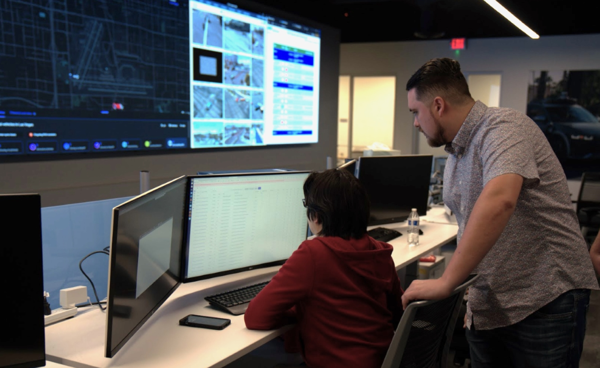

Fleet Monitoring Redesign at Motional
Since March 2021, my tenure at Motional has been marked by
significant growth and involvement in various aspects of our
driverless experience. My initial role involved the redesign of our
Command Center application, starting with the Fleet Monitoring
section. Through the process of the redesign, Fleet Monitoring
became a vital tool utilized by our operations teams to manage the
fleet of autonomous vehicles. This endeavor entailed extensive user
research with our ops team, the establishment and maintenance of a
new design system, leadership in designing key features, and
collaboration across teams on multiple tools and projects.
I am currently working on building out more details about this
project within what I'm able to share.

Thanks for Reading!
Working at Motional has been such a rewarding experience. If you'd
like to learn more about my role, my process, or want to work
together - send me a message below!
Or check out this article from Motional's website:
Controlling the Fleet: Motional’s Command Center Gives Detailed
Glimpse into AV Performance